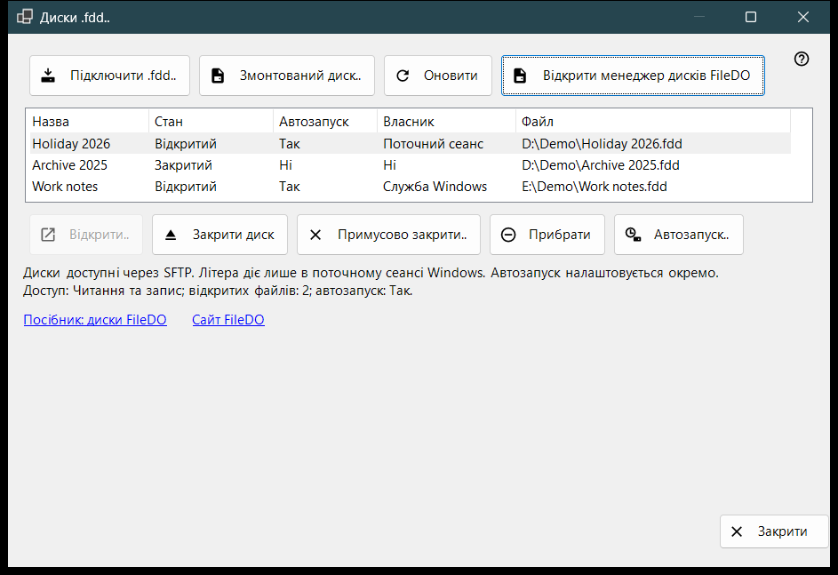
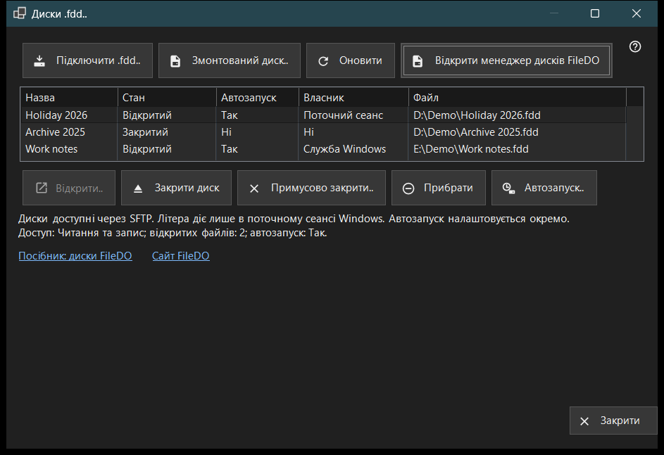

Диски .fdd
Призначення
Показує диски FileDO (.fdd), які цей ПК роздає через SFTP, і виконує звичайні команди з ними: підключити диск, відкрити або закрити його, прибрати з роздачі та вирішити, чи відкривати його разом із сервером. Вікно відкривається з пункту «Диски .fdd..» меню додавання в головному вікні Share Manager.


Порядок дій
- Натисніть «Підключити .fdd..», виберіть файл .fdd і підтвердьте діалог параметрів.
- Виберіть диск у списку; рядок під списком показує режим доступу, кількість відкритих файлів і автозапуск.
- Для закритого диска натисніть «Відкрити..», для відкритого - «Закрити диск», а «Автозапуск..» змінює автоматичне відкриття.
- «Оновити» перечитує стан; вікно й саме перечитує його кожні 10 секунд.
- «Закрити» закриває вікно.
Елементи вікна
Список дисків
Кожен рядок - один диск у роздачі: Назва, Стан (Відкритий, Відкривається, Закривається, Закритий, Заблокований, Помилка або Невідомо), Автозапуск, Власник і шлях до файла .fdd (колонка «Файл»). Власник показує, хто тримає диск відкритим: Служба Windows, Поточний сеанс або Ні, якщо ніхто. Наведіть курсор на рядок, щоб побачити повний шлях. Перший рядок вибирається сам, а рядок під списком показує доступ (Лише читання або Читання та запис), кількість відкритих файлів і автозапуск. Якщо служба роздачі не вміє роздавати диски, список і кнопки команд приховано, а в цьому рядку вказано причину; якщо диск змонтовано самим FileDO, з'являється посилання «Відкрити менеджер дисків FileDO».
Підключити .fdd..
Виберіть файл .fdd і поставте його на роздачу. Діалог параметрів запитує Назву, «Лише читання» та «Відкрити після реєстрації» (увімкнено за замовчуванням). Для зашифрованого диска він просить ще Пароль, а диску можна призначити літеру або залишити «Без літери - лише спільний доступ». Літера діє лише в поточному сеансі Windows. Якщо диск уже відкритий у FileDO, спершу збережіть зміни й закрийте його там. Якщо реєстрація пройшла, а диск не відкрився, повідомлення скаже про це, і диск залишиться в списку закритим.
Змонтований диск..
Виберіть готовий диск цього ПК, наприклад диск, який FileDO уже змонтував. Вікно закриється, і головне вікно продовжить звичайним кроком додавання папки для цього диска.
Відкрити, закрити й прибрати
«Відкрити..» відкриває закритий, заблокований або диск із помилкою й запитує пароль зашифрованого диска. «Закрити диск» доступне лише для відкритого диска: клієнти тимчасово втрачають доступ, а відкритим файлам дається до 30 секунд на закриття. «Примусово закрити..» одразу відключає відкриті файли, тому незбережені дані можуть бути втрачені. «Прибрати» знімає диск із роздачі: диск закривається, його автозапуск і збережений ключ видаляються, а файл .fdd залишається. Перед кожною з цих дій виводиться підтвердження, за замовчуванням вибрано скасування.
Автозапуск
Колонка «Автозапуск» показує «Так» або «Ні» для кожного диска без вибору рядка. Риска (-) означає, що служба роздачі не підтримує автозапуск; тоді кнопка «Автозапуск..» вимкнена. «Автозапуск..» перемикає налаштування після підтвердження: увімкнення відкриває диск разом із сервером, а пароль зашифрованого диска зберігається в захищеному сховищі Windows на цьому ПК; вимкнення видаляє цей збережений ключ. Налаштування не залежить від стану, тому в закритого чи несправного диска автозапуск може бути ввімкнено. Рядки FileDO у списку головного вікна теж його показують.
Посібник, сайт і «Закрити»
«Посібник: диски FileDO» і «Сайт FileDO» відкривають посібник і сайт FileDO - програми, з якої беруться диски. Якщо менеджер дисків FileDO не знайдено на цьому ПК, вікно пропонує встановити FileDO з його сайту. «Закрити» закриває вікно; поки триває операція з диском, закрити його не можна.
Налаштування менеджера · Налаштування спільного доступу SFTP · Налаштування сервера обміну